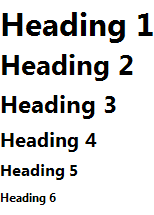

Some widgets can display text. You can quickly edit this text in-place. To open the in-place editor just double-click the widget or hit Enter. When finished with editing press the Enter key.
When editing widgets with multi-line text the Enter key serves to make new lines. In this case use the Ctrl+Enter combination to close the editor.
You can cancel the current edit by hitting the Esc key.
Certain widgets allow multiple items to be entered using comma (,) or newline as separator. When required, commas can be escaped using the \, syntax.
You can force multiple lines in widgets like Table, Placeholder, Button, Link and others by using the \n sequence.
Additionally, a wiki-like markup syntax can be used to style the text.
| What you type | What it looks like |
|---|---|
| *bold text* | bold text |
| _italicized text_ | italicized text |
| +underlined text+ | underlined text |
| -struck out text- | |
| ~disabled text~ | disabled text |
| %(color:red)colored text% | colored text |
| %(color:FF0000)colored text% | colored text |
| %(bgcolor:yellow)text with background% | text with background |
| %(font:+2)bigger text% | bigger text |
| %(font:-2)smaller text% | smaller text |
| %(font:14)14 points text% | 14 points text |
| +*_combine styles_*+ | combine styles |
| [link] | link |
| {icon-name} | insert the icon named “icon-name” |
| ${screen-name} | insert the name of the screen |
| ${screen-path} | insert the path of the screen |
| ${screen-mtime} | insert last modification time of the screen |
| ${current-time} | insert current time during print/export |
| ${page-number} | insert current page during print/export |
| ${page-count} | insert total page count during print/export |
| \*escape markup\* | *escape markup* |
| * A * Bullet ** List |
|
| # A # Numbered ## List |
|
| h1. Heading 1 h2. Heading 2 h3. Heading 3 h4. Heading 4 h5. Heading 5 h6. Heading 6 |
 |
Hit Ctrl+Space to open auto-completion popup with the list of available icons and macros. To narrow down the list of proposals just continue typing a search keyword directly in the text. For macros start with the ‘$’ character. Auto-completion is smart enough to recognize what you are trying to do.
Next: Working with Images